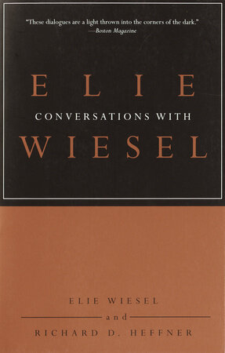
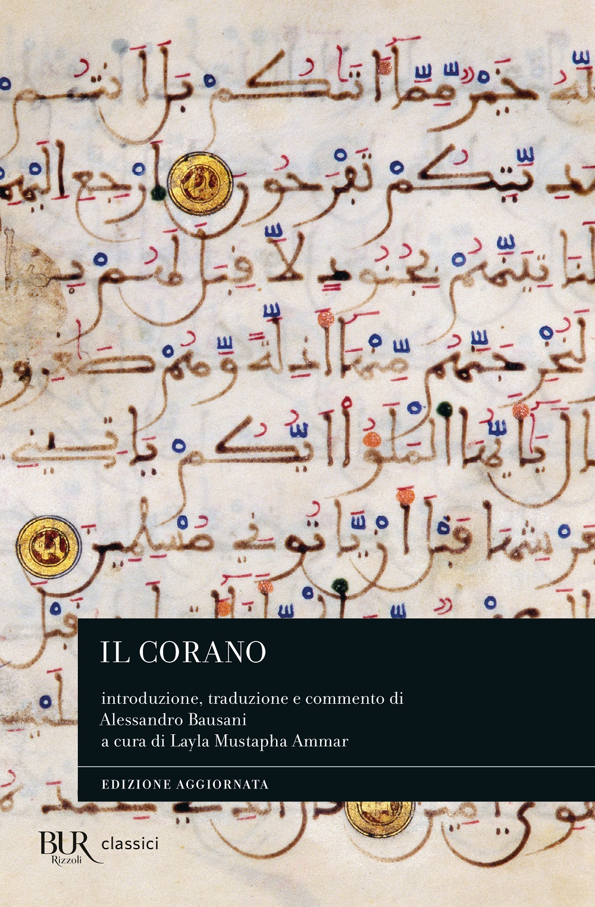

28:56 · 3 OPERE
Nobel laureate Elie Wiesel discusses the resurgence of antisemitism.
Il filo del discorso
Richard D. Heffner intervista Elie Wiesel sul riemergere dell’antisemitismo, nel contesto dei primi anni Duemila. La conversazione parte da un sondaggio statunitense del 2002 e dalla persistenza del pregiudizio dopo la Shoah. Wiesel rifiuta di definire la propria vita attraverso l’odio e distingue la responsabilità di chi perseguita dall’identità di chi ne subisce gli effetti. Il confronto passa ai rapporti fra Stati Uniti, Israele e Medio Oriente: Wiesel condanna gli attentati contro civili, auspica l’intervento delle autorità religiose contro le giustificazioni della violenza e sostiene la prospettiva di due Stati. La memoria e il libro diventano poi immagini della continuità ebraica. Nell’ultima parte Heffner interroga il rapporto fra religione, libertà civili e critica di Israele; Wiesel espone la propria posizione senza equiparare automaticamente ogni critica al governo israeliano all’antisemitismo.
I libri nel discorso

Conversations with Elie Wiesel
Note sul riferimento
Copertina: Schocken · edizione in brossura 2003 · prima edizione 2001
Immagine autentica dell’opera, controllata visivamente; l’edizione di riferimento non è attribuita al filmato.
Richard D. Heffner annuncia Conversations with Elie Wiesel e la preparazione dell’edizione tascabile ampliata, riprendendo il titolo a 97 secondi.

Corano
Note sul riferimento
Copertina: BUR Classici, edizione aggiornata
Edizione con introduzione, traduzione e commento di Alessandro Bausani, a cura di Layla Mustapha Ammar. Anno della ristampa non dedotto dalla copertina; nessuna edizione attribuita al video.
Wiesel nomina il Corano nella condanna delle giustificazioni religiose degli attentati; non annuncia un versetto specifico.

Bibbia
Note sul riferimento
Copertina: San Paolo, 2014 · Nuova Versione dai Testi Antichi · edizione di riferimento
La Bibbia è nominata esplicitamente nella discussione dell’osservanza e poi del suo studio e insegnamento.